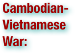
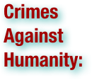
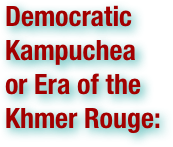
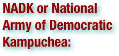
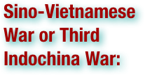

Cambodian Genocide: Terms
.pdf (. . . )


Agrarian socialism is a socioeconomic political system which combines an agrarian way of life with socialist economic policies. When compared to standard socialist systems which are generally urban/industrial (thus often focused on centralization and a comprehensive state), internationally oriented, and more progressive/liberal in terms of social orientation, many agrarian socialist movements have tended to be rural (with an emphasis on decentralization and smaller government), locally focused, and traditional/conservative. Agrarian socialism applies to predominantly pre-industrial, non-urbanized demographics. The emphasis of agrarian socialists is therefore on control, ownership and utilization of land rather than the means of production. (wikipedia.org. Accessed on July 22, 2011.)

A bureaucrat is a member of a bureaucracy and can comprise the administration of any organization of any size, though the term usually connotes someone within an institution of a government or corporation. Bureaucrat jobs were often "desk jobs" (the French for "desk" being bureau, though bureau can also be translated as "office"), though the modern bureaucrat may be found "in the field" as well as in an office. (wikipedia.org. Accessed on July 22, 2011.)

Cambodia, officially known as the Kingdom of Cambodia, is a country located in the southern portion of the Indochina Peninsula in Southeast Asia. With a total landmass of 181,035 square kilometers (69,898 sq. mi), it is bordered by Thailand to the northwest, Laos to the northeast, Vietnam to the east, and the Gulf of Thailand to the southwest. With a population of over 14.8 million, Cambodia is the 65th most populous country in the world. The official religion is Theravada Buddhism which is practiced by around 92% of the Cambodian population. The country minority groups include Vietnamese, Chinese, Chams and 30 various hill tribes. The capital and largest city is Phnom Penh, the political, economical, cultural center of Cambodia. The kingdom is a constitutional monarchy with Norodom Sihamoni an elected monarch chosen by the Royal Throne Council as head of state. The head of government is Hun Sen who is currently the longest serving leader in South East Asia and has ruled Cambodia for over 25 years. The Khmer Rouge was the name given to the followers of the Communist Party of Kampuchea, who were the ruling party in Cambodia from 1975 to 1979, led by Pol Pot, Nuon Chea, Ieng Sary, Son Sen and Khieu Samphan. The regime led by the Khmer Rouge from 1975 to 1979 was known as the Democratic Kampuchea. This organization is remembered primarily for its policy of social engineering, which resulted in genocide. Its attempts at agricultural reform led to widespread famine, while its insistence on absolute self-sufficiency, even in the supply of medicine, led to the deaths of thousands from treatable diseases (such as malaria). Brutal and arbitrary executions and torture carried out by its cadres against perceived subversive elements, or during purges of its own ranks between 1976 and 1978, are considered to have constituted a genocide. The clandestine Communist Party of Kampuchea itself constituted the secret leadership of the Khmer Rouge, as its official name was known only to a few insiders: it called itself the Angkar (the organization) and only announced officially its existence in 1977, almost two years after the establishment of Democratic Kampuchea. After the fall of the Khmer Rouge regime, the organization's remaining guerrilla forces became known as the National Army of Democratic Kampuchea. In 1981 the party itself was dissolved, and substituted by the Party of Democratic Kampuchea, which was succeeded in the 1993–1994 period by the Cambodian National Unity Party. (wikipedia.org. Accessed on July 22, 2011.)

The Cambodian Civil War was a conflict that pitted the forces of the Communist Party of Kampuchea (known as the Khmer Rouge) and their allies the Democratic Republic of Vietnam (North Vietnam) and the Viet Cong against the government forces of Cambodia (after October 1970, the Khmer Republic), which were supported by the United States (U.S.) and the Republic of Vietnam (South Vietnam). The struggle was exacerbated by the influence and actions of the allies of the two warring sides. People's Army of Vietnam (North Vietnamese Army) involvement was designed to protect its Base Areas and sanctuaries in eastern Cambodia, without which the prosecution of its military effort in South Vietnam would have been more difficult. The U.S. was motivated by the need to buy time for its withdrawal from Southeast Asia and to protect its ally, the South Vietnamese regime. American and both South and North Vietnamese forces directly participated (at one time or another) in the fighting. The central government was mainly assisted by the application of massive U.S. aerial bombing campaigns and direct material and financial aid. After five years of savage fighting that brought about massive casualties, the destruction of the economy, the starvation of the population, and grievous atrocities, the Republican government was defeated on 17 April 1975 when the victorious Khmer Rouge proclaimed the establishment of Democratic Kampuchea. Thus, it has been argued that the US intervention in Cambodia contributed to the eventual seizure of power by the Khmer Rouge, that grew from 14,000 in number in 1970 to 70,000 in 1975. This view has been disputed, with author John M. Del Vecchio asserting that over 100,000 Communist troops had overrun two-thirds of the country prior to any American bombing, and with documents uncovered from the Soviet archives revealing that the North Vietnamese invasion of 1970 was launched at the explicit request of the Khmer Rouge following negotiations with Nuon Chea. The conflict, although an indigenous civil war, was considered to be part of the larger Vietnam War (1959–1975) that also consumed the neighboring Kingdom of Laos, South Vietnam, and North Vietnam. This civil war led to the Cambodian Genocide, one of the bloodiest in history. (wikipedia.org. Accessed on July 22, 2011.)


The Cambodian–Vietnamese War was an armed conflict fought within the geopolitical context of the Cold War involving the Socialist Republic of Vietnam and Democratic Kampuchea. The war began with limited objective campaigns along the land and maritime boundaries of Vietnam and Kampuchea between 1975 and 1977, occasionally involving division-sized military formations. On 25 December 1978, Vietnam launched a full-scale invasion of Kampuchea and subsequently occupied the country after the Khmer Rouge was removed from power. (wikipedia.org. Accessed on July 22, 2011.)

Chinese Cambodians are Cambodian citizens of Chinese descent. "Khmer-Chen", is used for peoples of either mixed Cambodian & Chinese descent or people of whom are Cambodian born citizens with Chinese ancestry; (Khmer being the ethnic group of Cambodia and Chen meaning Chinese in the Khmer language). During the late 1960s and early 1970s, they were the largest ethnic minority in Cambodia; there were an estimated 425,000. However, by 1984, there were only 61,400 Chinese Cambodians left. This has been attributed to a combination of warfare, economic stagnation, Khmer Rouge and Vietnamese persecution, and emigration. (wikipedia.org. Accessed on July 22, 2011.)

The Cham people are an ethnic group in Southeast Asia. They are concentrated between the Kampong Cham Province in Cambodia and central Vietnam's Phan Rang-Thap Cham, Phan Thiết, Ho Chi Minh City and An Giang areas. Approximately 4,000 Chams also live in Thailand; many of whom have moved south to the Pattani, Narathiwat, Yala, and Songkhla Provinces for work. Cham form the core of the Muslim communities in both Cambodia and Vietnam. (wikipedia.org. Accessed on July 22, 2011.)


The Coalition Government of Democratic Kampuchea (CGDK) was a coalition government in exile composed of three Cambodian political factions: Prince Norodom Sihanouk's Funcinpec party, the Party of Democratic Kampuchea (often referred to as the Khmer Rouge) and the Khmer People's National Liberation Front (KPNLF) formed in 1982, broadening the de facto deposed Democratic Kampuchea regime. (wikipedia.org. Accessed on July 22, 2011.)

A concubine is generally a woman in an ongoing, marriage-like relationship with a man whom she cannot marry for a specific reason. It may be because she is of lower social rank than the man (including slave status) or because the man is already married. Generally, only men of high economic and social status have concubines. Many historical rulers maintained concubines as well as wives. (wikipedia.org. Accessed on July 22, 2011.)


Crimes against humanity, as defined by the Rome Statute of the International Criminal Court Explanatory Memorandum, "are particularly odious offenses in that they constitute a serious attack on human dignity or grave humiliation or a degradation of one or more human beings. They are not isolated or sporadic events, but are part either of a government policy (although the perpetrators need not identify themselves with this policy) or of a wide practice of atrocities tolerated or condoned by a government or a de facto authority. Murder; extermination; torture; rape; political, racial, or religious persecution and other inhumane acts reach the threshold of crimes against humanity only if they are part of a widespread or systematic practice. Isolated inhumane acts of this nature may constitute grave infringements of human rights, or depending on the circumstances, war crimes, but may fall short of falling into the category of crimes under discussion." (wikipedia.org. Accessed on July 22, 2011.)

Democide is a term revived and redefined by the political scientist R. J. Rummel as "the murder of any person or people by a government, including genocide, politicide, and mass murder." Rummel created the term as an extended concept to include forms of government murder that are not covered by the legal definition of genocide, and it has found currency among other scholars. (wikipedia.org. Accessed on July 22, 2011.)


Immediately after its victory, the CPK ordered the evacuation of all cities and towns, sending the entire urban population into the countryside to work as farmers, as the CPK was trying to reshape society into a model that Pol Pot had conceived. Thousands starved or died of disease during the evacuation and its aftermath. Many of those forced to evacuate the cities were resettled in newly created villages, which lacked food, agricultural implements, and medical care. Many who lived in cities had lost the skills necessary for survival in an agrarian environment. Thousands starved before the first harvest. Hunger and malnutrition—bordering on starvation—were constant during those years. Most military and civilian leaders of the former regime who failed to disguise their pasts were executed. Within the CPK, the Paris-educated leadership—Pol Pot, Ieng Sary, Nuon Chea, and Son Sen—were in control. A new constitution in January 1976 established Democratic Kampuchea as a Communist People's Republic, and a 250-member Assembly of the Representatives of the People of Kampuchea (PRA) was selected in March to choose the collective leadership of a State Presidium, the chairman of which became the head of state. Prince Sihanouk resigned as head of state on April 4. On April 14, after its first session, the PRA announced that Khieu Samphan would chair the State Presidium for a 5-year term. It also picked a 15-member cabinet headed by Pol Pot as prime minister. Prince Sihanouk was put under virtual house arrest. The new government sought to completely restructure Cambodian society. Remnants of the old society were abolished and religion, particularly Buddhism and Catholicism, was suppressed. Agriculture was collectivized, and the surviving part of the industrial base was abandoned or placed under state control. Cambodia had neither a currency nor a banking system. Life in 'Democratic Kampuchea' was strict and brutal. In many areas of the country people were rounded up and executed for speaking a foreign language, wearing glasses, scavenging for food, and even crying for dead loved ones. Former businessmen and bureaucrats were hunted down and killed along with their entire families; the Khmer Rouge feared that they held beliefs that could lead them to oppose their regime. A few Khmer Rouge loyalists were even killed for failing to find enough 'counter-revolutionaries' to execute. Solid estimates of the numbers who died between 1975 and 1979 are not available, but it is likely that hundreds of thousands were executed by the regime. Hundreds of thousands died of starvation and disease (both under the CPK and during the Vietnamese invasion in 1978). Some estimates of the dead range from 1 to 3 million, out of a 1975 population estimated at 7.3 million. The CIA estimated 50,000–100,000 were executed in a single purge by the state and that 1.5 million (from a range of 1.2 to 1.8 million) were killed by the Khmer Rouge from 1975 to 1979. Democratic Kampuchea's relations with Vietnam and Thailand worsened rapidly as a result of border clashes and ideological differences. While communist, the CPK was fiercely nationalistic, and most of its members who had lived in Vietnam were purged. Democratic Kampuchea established close ties with the People's Republic of China, and the Cambodian-Vietnamese conflict became part of the Sino-Soviet rivalry, with Moscow backing Vietnam. Border clashes worsened when the Democratic Kampuchea military attacked villages in Vietnam. The regime broke off relations with Hanoi in December 1977, protesting Vietnam's alleged attempt to create an Indochina Federation. In mid-1978, Vietnamese forces invaded Cambodia, advancing about 30 miles (48 km) before the arrival of the rainy season. The reasons for Chinese support of the CPK was to prevent a pan-Indochina movement, and maintain Chinese military superiority in the region. The Soviet Union supported a strong Vietnam to maintain a second front against China in case of hostilities and to prevent further Chinese expansion. Since Stalin's death, relations between Mao-controlled China and the Soviet Union had been lukewarm at best. In February to March 1979, China and Vietnam would fight the brief Sino-Vietnamese War over the issue. In December 1978, Vietnam announced formation of the Kampuchean United Front for National Salvation (KUFNS) under Heng Samrin, a former DK division commander. It was composed of Khmer Communists who had remained in Vietnam after 1975 and officials from the eastern sector—like Heng Samrin and Hun Sen—who had fled to Vietnam from Cambodia in 1978. In late December 1978, Vietnamese forces launched a full invasion of Cambodia, capturing Phnom Penh on January 7, 1979 and driving the remnants of Democratic Kampuchea's army westward toward Thailand. (wikipedia.org. Accessed on July 22, 2011.)

French Indochina, frequently abbreviated to Đông Pháp) was part of the French colonial empire in southeast Asia. A federation of the three Vietnamese regions, Tonkin (North), Annam (Central), and Cochinchina (South), as well as Cambodia, was formed in 1887. (wikipedia.org. Accessed on July 22, 2011.)

The Geneva Conference (April 26 – July 20, 1954) was a conference which took place in Geneva, Switzerland whose purpose was to attempt to find a way to unify Korea and discuss the possibility of restoring peace in Indochina. The Soviet Union, the United States, France, the United Kingdom, and the People's Republic of China were participants throughout the whole conference while different countries concerned with the two questions were also represented during the discussion of their respective questions, which included the countries that sent troops through the UN to the Korean War and the various countries that ended the First Indochina War between France and the Viet Minh. The part of the conference on the Korean question ended without adopting any declarations or proposals. Some participants and analysts blame the U.S. for obstructing movements towards unification. On Indochina, the conference produced a set of documents known as the Geneva Accords. These agreements separated Vietnam into two zones, a northern zone to be governed by the Viet Minh, and a southern zone to be governed by the State of Vietnam, then headed by former emperor Bảo Đại. A "Conference Final Declaration", issued by the British chairman of the conference, provided that a "general election" be held by July 1956 to create a unified Vietnamese state. Although presented as a consensus view, this document was not accepted by the delegates of either South Vietnam or the United States. In addition, three separate ceasefire accords, covering Cambodia, Laos, and Vietnam, were signed at the conference. (wikipedia.org. Accessed on July 22, 2011.)

Guerrilla warfare is a form of irregular warfare and refers to conflicts in which a small group of combatants including, but not limited to, armed civilians (or "irregulars") use military tactics, such as ambushes, sabotage, raids, the element of surprise, and extraordinary mobility to harass a larger and less-mobile traditional army, or strike a vulnerable target, and withdraw almost immediately. The term means "little war" in Spanish, and the word, guerrilla, has been used to describe the concept since the 18th century, and perhaps earlier. (wikipedia.org. Accessed on July 22, 2011.)

In justice and law, house arrest (also called home confinement, home detention, or electronic monitoring) is a measure by which a person is confined by the authorities to his or her residence. Travel is usually restricted, if allowed at all. House arrest is a lenient alternative to prison time or juvenile-detention time. (wikipedia.org. Accessed on July 22, 2011.)

Indochina, or the Indochinese peninsula, is a region in Southeast Asia. It lies roughly east of India, and southwest of China. The name has its origins in the French, Indochine, as a combination of the names of "India" and "China", and was adopted when French colonizers in Vietnam began expanding their territory to bordering countries. The term Indochina is also used in biogeography for the Indochinese Region, a major biogeographical region within the Indomalaya ecozone. (wikipedia.org. Accessed on July 22, 2011.)

An insurgency is an armed rebellion against a constituted authority (for example, an authority recognized as such by the United Nations) when those taking part in the rebellion are not recognized as belligerents. An insurgency can be fought via counter-insurgency warfare, and may also be opposed by measures to protect the population, and by political and economic actions of various kinds aimed at undermining the insurgents' claims against the incumbent regime. (wikipedia.org. Accessed on July 22, 2011.)

The Communist Party of Kampuchea, also known as Khmer Communist Party (KCP), was a communist party in Cambodia. Its followers were generally known as Khmer Rouge (Red Khmers). . . In power, the Khmer Rouge carried out a radical program that included isolating the country from foreign influence, closing schools, hospitals and factories, abolishing banking, finance and currency, outlawing all religions, confiscating all private property and relocating people from urban areas to collective farms where forced labor was widespread. The purpose of this policy was to turn Cambodians into "Old People" through agricultural labor. These actions resulted in massive deaths through executions, work exhaustion, illness, and starvation. In Phnom Penh and other cities, the Khmer Rouge told residents that they would be moved only about "two or three kilometers" outside the city and would return in "two or three days." Some witnesses say they were told that the evacuation was because of the "threat of American bombing" and that they did not have to lock their houses since the Khmer Rouge would "take care of everything" until they returned. These were not the first evacuations of civilian populations by the Khmer Rouge. Similar evacuations of populations without possessions had been occurring on a smaller scale since the early 1970s. The Khmer Rouge attempted to turn Cambodia into a classless society by depopulating cities and forcing the urban population into agricultural communes. The entire population was forced to become farmers in labour camps. During their four years in power, the Khmer Rouge overworked and starved the population, at the same time executing selected groups who had the potential to undermine the new state (including intellectuals) and killing many others for even minor breaches of rules. Through the 1970s, and especially after mid-1975, the party was also shaken by factional struggles. There were even armed attempts to topple Pol Pot. The resultant purges reached a crest in 1977 and 1978 when thousands, including some important CPK leaders, were executed. The older generation of communists, suspected of having links with or sympathies for Vietnam were targeted by the Pol Pot leadership. (wikipedia.org. Accessed on July 22, 2011.)

The Khmer People's National Liberation Front (KPNLF) was a political front organized in 1979 in opposition to the Vietnamese-installed People's Republic of Kampuchea (PRK) regime in Cambodia. The 200,000 Vietnamese troops supporting the PRK, as well as Khmer Rouge defectors, had ousted the brutal Democratic Kampuchea regime of Pol Pot, and were initially welcomed by the majority of Cambodians as liberators. Some Khmer, though, recalled the two countries' historical rivalry and feared that the Vietnamese would attempt to subjugate the country, and began to oppose their military presence. Members of the KPNLF supported this view. (wikipedia.org. Accessed on July 22, 2011.)


The National Army of Democratic Kampuchea (NADK) was a Cambodian guerrilla force. NADK were the armed forces of the Party of Democratic Kampuchea (also known as 'Khmer Rouge'), operating between 1979 and the late 1990s. (wikipedia.org. Accessed on July 22, 2011.)

Phnom Penh is the capital and largest city of Cambodia. Located on the banks of the Mekong River, Phnom Penh has been the national capital since the French colonized Cambodia, and has grown to become the nation's center of economic and industrial activities, as well as the center of security, politics, economics, cultural heritage, and diplomacy of Cambodia. Once known as the “Pearl of Asia”, it was considered one of the loveliest French-built cities in Indochina in the 1920s. Phnom Penh, along with Siem Reap and Sihanoukville, are significant global and domestic tourist destinations for Cambodia. Founded in 1434, the city is noted for its beautiful and historical architecture and attractions. There are a number of surviving French colonial buildings scattered along the grand boulevards. Situated on the banks of the Tonlé Sap, Mekong and Bassac rivers, the Phnom Penh metropolitan area is home to more than 2 million of Cambodia’s population of over 14 million. The city is the wealthiest and most populous city in Cambodia and is home to the country’s political hub. (wikipedia.org. Accessed on July 22, 2011.)

Saloth Sar (May 19, 1925 – April 15, 1998), better known as Pol Pot, was a Cambodian Chinese revolutionary who led the Khmer Rouge from 1963 until his death in 1998. From 1976 to 1979, he served as the Prime Minister of Democratic Kampuchea. Pol Pot became leader of Cambodia in mid-1975. During his time in power he imposed a version of agrarian socialism, forcing urban dwellers to relocate to the countryside to work in collective farms and forced labor projects, toward a goal of "restarting civilization" in "Year Zero." The combined effects of forced labor, malnutrition, poor medical care and executions resulted in the deaths of approximately 21 percent of the Cambodian population. In all, an estimated 1,700,000–2,500,000 people died under his leadership. In 1979 after the invasion of Cambodia by neighboring Vietnam in the Cambodian–Vietnamese War, he fled into the jungles of southwest Cambodia and the Khmer Rouge government collapsed. From 1979 to 1997 he and a remnant of the old Khmer Rouge operated from the border region of Cambodia and Thailand, where they clung to power, with nominal United Nations recognition as the rightful government of Cambodia. He died in 1998 while under house arrest by the Ta Mok faction of the Khmer Rouge. Since his death, rumors that he was poisoned have persisted. (wikipedia.org. Accessed on July 22, 2011.)

Political dissent refers to any expression designed to convey dissatisfaction with or opposition to the policies of a governing body. Such expression may take forms from vocal disagreement to civil disobedience to the use of violence. Historically, repressive governments have sought to punish political dissent. The protection of freedoms that facilitate peaceful dissent has become a hallmark of free and open societies. (wikipedia.org. Accessed on July 22, 2011.)

In history, religion, and political science, a purge is the removal of people who are considered undesirable by those in power from a government, from another organization, or from society as a whole. Purges can be peaceful or violent; many will end with the imprisonment or exile of those purged, but in some cases they will simply be removed from office. Restoring people who have been purged is known as rehabilitation. (wikipedia.org. Accessed on July 22, 2011.)

The term show trial is a pejorative description of a type of highly public trial in which there is a strong connotation that the judicial authorities have already determined the guilt of the defendant. The actual trial has as its only goal to present the accusation and the verdict to the public as an impressive example and as a warning. Show trials tend to be retributive rather than correctional justice. The term was first recorded in the 1930s. Such trials can exhibit scant regard for the principles of jurisprudence and even for the letter of the law. Defendants have little real opportunity to justify themselves: they have often signed statements under duress and/or suffered torture prior to appearing in the court-room. (wikipedia.org. Accessed on July 22, 2011.)


The Sino–Vietnamese War, also known as the Third Indochina War, known in the PRC as . . . Counterattack against Vietnam in Self-Defense and in Vietnam as . . . War against Chinese expansionism, was a brief but bloody border war fought in 1979 between the People's Republic of China (PRC) and the Socialist Republic of Vietnam. The PRC launched the offensive in response to Vietnam's 1978 invasion and occupation of Cambodia, which ended the reign of the PRC-backed Khmer Rouge. (wikipedia.org. Accessed on July 22, 2011.)

Social engineering is a discipline in political science that refers to efforts to influence popular attitudes and social behaviors on a large scale, whether by governments or private groups. In the political arena, the counterpart of social engineering is political engineering. (wikipedia.org. Accessed on July 22, 2011.)

Subversion refers to an attempt to transform the established social order, its structures of power, authority, and hierarchy; examples of such structures include the State. In this context, a "subversive" is sometimes called a "traitor" with respect to (and usually by) the government in-power. A subversive is something or someone carrying the potential for some degree of subversion. Subversion can imply the use of insidious, dishonest, monetary, or violent methods to bring about such change. This is in contrast to nonviolent protest, a coup d'état, or working through traditional means (if) available in a political system to bring about change. (wikipedia.org. Accessed on July 22, 2011.)

The Killing Fields are a number of sites in Cambodia where large numbers of people were killed and buried by the Khmer Rouge regime, during its rule of the country from 1975 to 1979, immediately after the end of the Cambodian Civil War (1970-1975). (wikipedia.org. Accessed on July 22, 2011.)

Torture, according to the United Nations Convention Against Torture (an advisory measure of the UN General Assembly) is: . . . any act by which severe pain or suffering, whether physical or mental, is intentionally inflicted on a person for such purposes as obtaining from him, or a third person, information or a confession, punishing him for an act he or a third person has committed or is suspected of having committed, or intimidating or coercing him or a third person, or for any reason based on discrimination of any kind, when such pain or suffering is inflicted by or at the instigation of or with the consent or acquiescence of a public official or other person acting in an official capacity. It does not include pain or suffering arising only from, inherent in, or incidental to, lawful sanctions. --UN Convention Against Torture. (wikipedia.org. Accessed on July 22, 2011.)

Tuol Sleng . . . site is a former high school [in Phnom Penh] which was used as the notorious Security Prison 21 (S-21) by the Khmer Rouge communist regime from its rise to power in 1975 to its fall in 1979. Tuol Sleng means "Hill of the Poisonous Trees" or "Strychnine Hill". . . From 1975 to 1979, an estimated 17,000 people were imprisoned at Tuol Sleng (some estimates suggest a number as high as 20,000, although the real number is unknown). At any one time, the prison held between 1,000–1,500 prisoners. They were repeatedly tortured and coerced into naming family members and close associates, who were in turn arrested, tortured and killed. In the early months of S-21's existence, most of the victims were from the previous Lon Nol regime and included soldiers, government officials, as well as academics, doctors, teachers, students, factory workers, monks, engineers, etc. Later, the party leadership's paranoia turned on its own ranks and purges throughout the country saw thousands of party activists and their families brought to Tuol Sleng and murdered. Those arrested included some of the highest ranking communist politicians such as Khoy Thoun, Vorn Vet and Hu Nim. Although the official reason for their arrest was "espionage", these men may have been viewed by Khmer Rouge leader Pol Pot as potential leaders of a coup against him. Prisoners' families were often brought en masse to be interrogated and later murdered at the Choeung Ek extermination center. (wikipedia.org. Accessed on July 22, 2011.)

War crimes are serious violations of the laws applicable in armed conflict (also known as international humanitarian law) giving rise to individual criminal responsibility. Examples of such conduct includes "murder, the ill-treatment or deportation of civilian residents of an occupied territory to slave labor camps", "the murder or ill-treatment of prisoners of war", the killing of prisoners, "the wanton destruction of cities, towns and villages, and any devastation not justified by military, or civilian necessity". (wikipedia.org. Accessed on July 22, 2011.)

The term Year Zero, applied to the takeover of Cambodia in 1975 by Pol Pot, is an analogy to the Year One of the French Revolutionary Calendar. During the French Revolution, after the abolition of the French monarchy (September 20, 1792), the National Convention instituted a new calendar and declared the beginning of the Year I. The Pol Pot takeover of Phnom Penh was rapidly followed by a series of drastic revolutionary agrarian socialism policies vastly exceeding those of the French Reign of Terror and culminating in the Cambodian Genocide. The idea behind Year Zero is that all culture and traditions within a society must be completely destroyed or discarded and a new revolutionary culture must replace it, starting from scratch. All history of a nation or people before Year Zero is largely irrelevant, as it will (as an ideal) be purged and replaced from the ground up. In Cambodia, teachers, artists, and intellectuals were especially singled out and executed during the purges accompanying Pol Pot's Year Zero. (wikipedia.org. Accessed on July 22, 2011.)